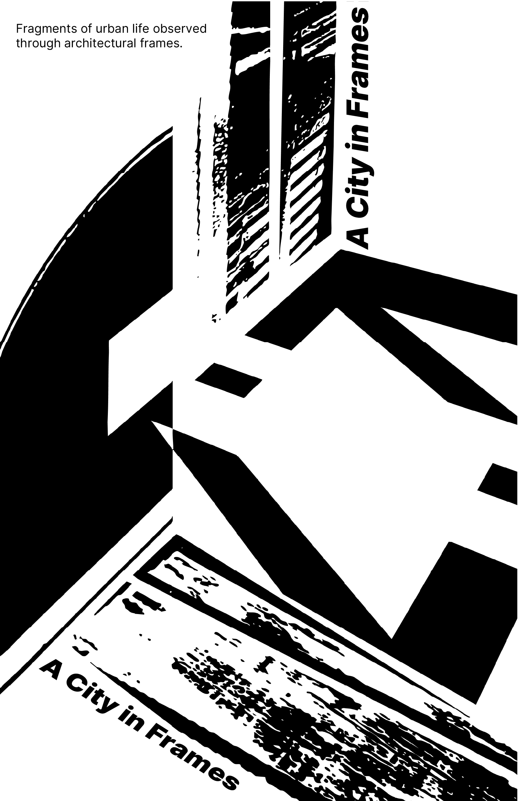
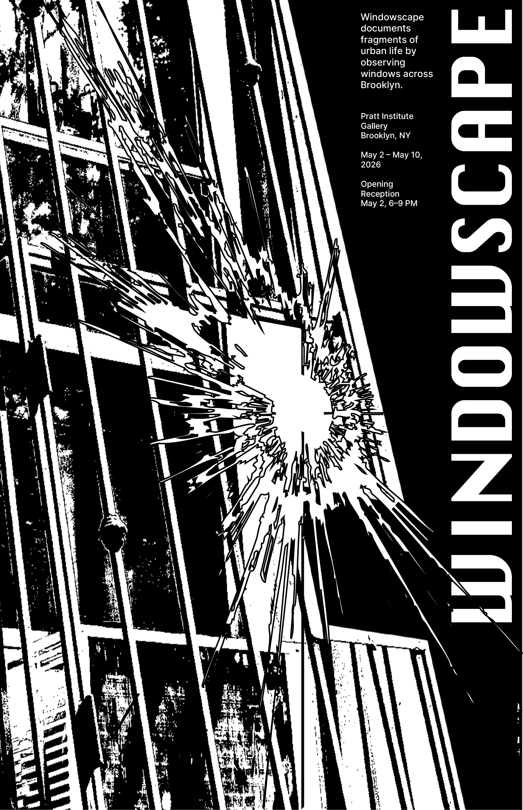
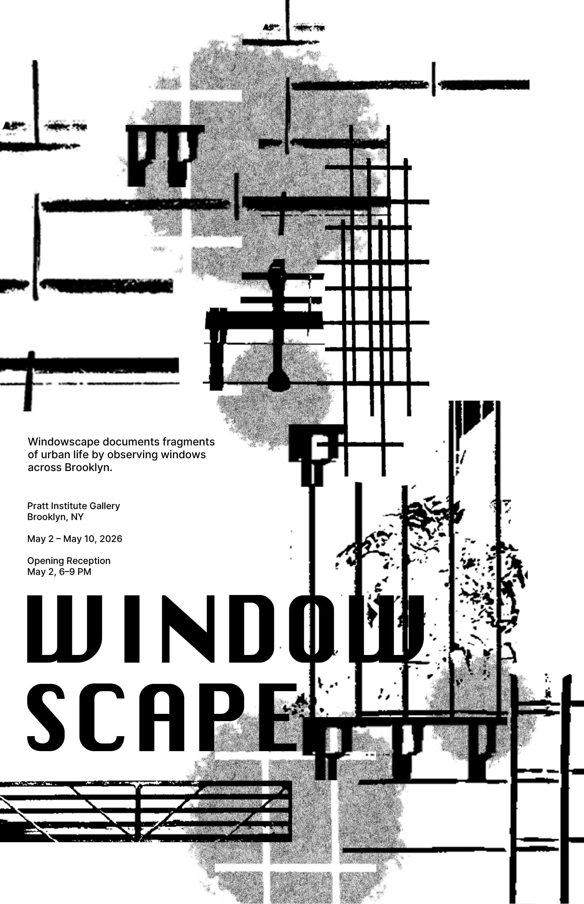
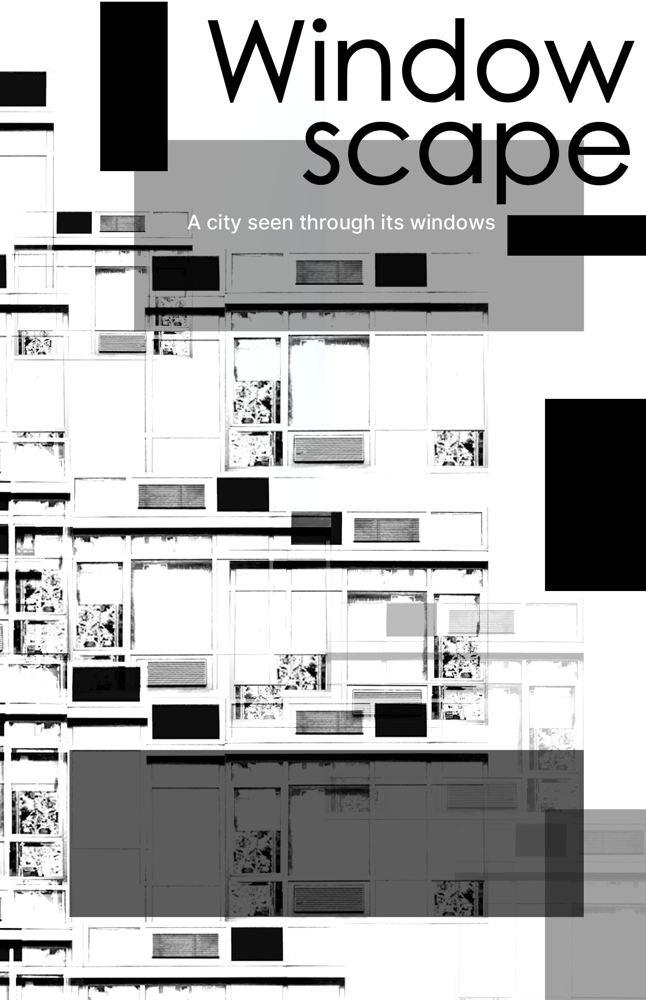
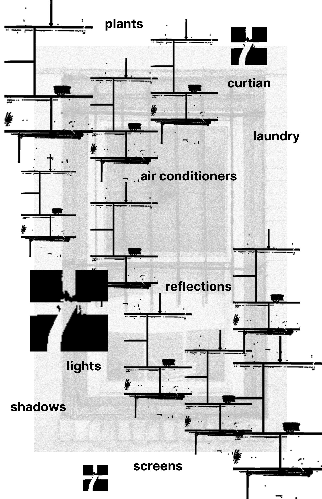
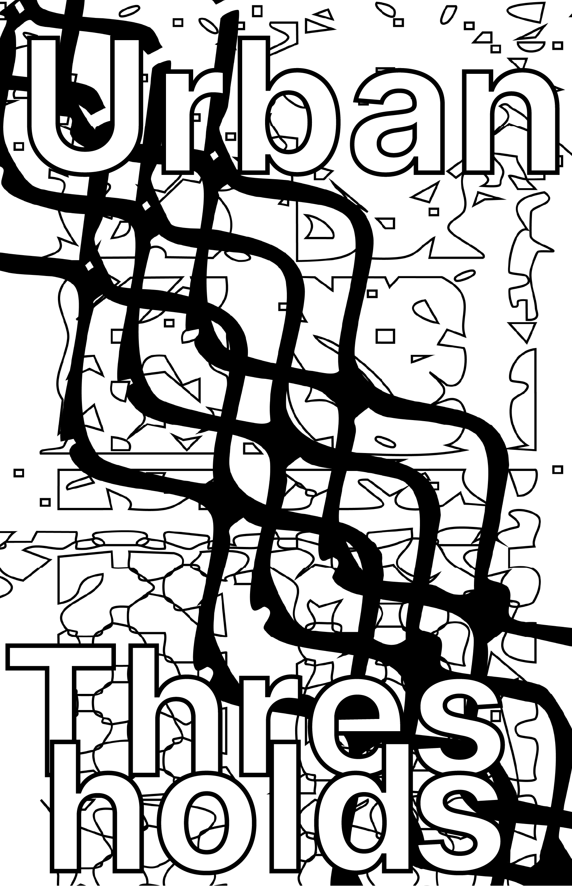

Windowscape
Concept
This project explores the window as a visual and cultural interface — a boundary that separates inside and outside while quietly revealing the life behind it. Through curtains, plants, protective grilles, and weathered surfaces, windows become more than architectural details; they record traces of identity, privacy, class, and time.
Overview
By isolating windows from their original buildings and presenting them as a unified system, the project proposes a new way of reading the city through its most ordinary structures. The window becomes a lens through which everyday life, neighborhood memory, and the relationship between public observation and private existence can be understood.

Poster Series






drag or scroll to browse posters
click to shuffle elements


Installation